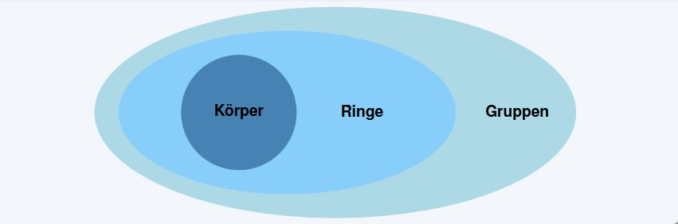
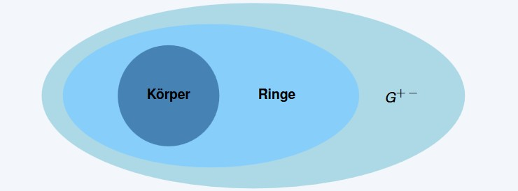
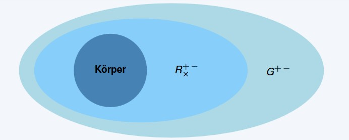
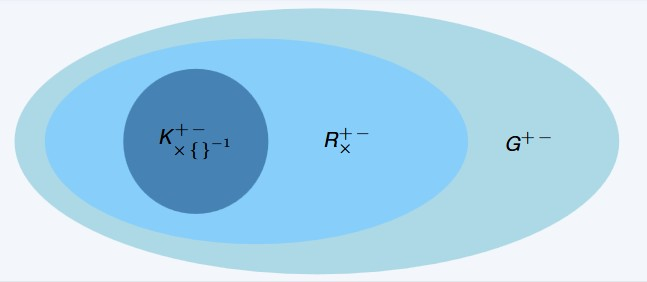
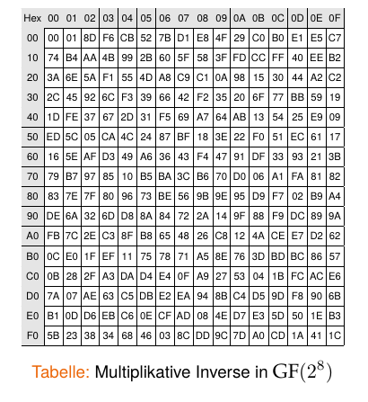

Galois-Körper / Endliche Körper

Prof. Dr. Lukas Iffländer
HTW Dresden
15.09.2026
Agenda
- 01Motivation
- 02Algebraische Strukturen
- 03Endliche Körper
- 04Primzahlkörper
- 05Erweiterungskörper
- 06Arithmetik in GF(2^m)
Motivation
- DES ist unsicher (nur 56-Bit Schlüssel, anfällig für Brute-Force-Angriffe)
- Moderne Kryptografie benötigt stärkere Algorithmen
- Wollen DES durch AES ersetzen
- AES arbeitet mit endlichen Körpern
=> Wir müssen endliche Körper verstehen
Einleitung zu endlichen Körpern
Begriffe
- Endliche Körper = Galois
- Fields = Finite Fields
-> Benannt nach Évariste Galois (1811–1832)

Gruppen
Definition 1.1
Eine Gruppe ist eine Menge von Elementen \(G\) zusammen mit einer Operation \(\circ\), die zwei Elemente von \(G\) verknüpft.
Eine Gruppe hat die folgenden Eigenschaften:
- Die Gruppenoperation ist abgeschlossen. D. h. für alle \(a, b \in G\) gilt \(a \circ b = c \in G\).
- Die Gruppenoperation ist assoziativ. D. h. für alle \(a, b, c \in G\) gilt \((a \circ b) \circ c = a \circ (b \circ c)\).
- Es existiert ein Element \(1 \in G\), genannt neutrales Element, sodass für alle \(a \in G\) gilt \(a \circ 1 = a\).
- Für jedes Element \(a \in G\) existiert ein inverses Element \(a^{-1} \in G\), sodass \(a \circ a^{-1} = 1\).
Zusätzlich: Eine Gruppe heißt abelsch (oder kommutativ), wenn für alle \(a, b \in G\) gilt:
\[ a \circ b = b \circ a. \]
Einleitung zu endlichen Körpern
Grundlegende algebraische Strukturen

Ringe
Definition 1.2
Ein Ring ist eine Menge von Elementen \(R\) zusammen mit zwei Operationen \(+\) und \(\times\), die zwei Elemente von \(R\) verknüpfen.
Ein Ring hat die folgenden Eigenschaften:
- Die Addition ist abgeschlossen. D. h. für alle \(a, b \in R\) gilt \(a + b \in R\).
- Die Addition ist assoziativ. D. h. für alle \(a, b, c \in R\) gilt \((a + b) + c = a + (b + c)\).
- Es existiert ein Element \(0 \in R\), genannt neutrales Element der Addition, sodass für alle \(a \in R\) gilt \(a + 0 = a\).
- Für jedes Element \(a \in R\) existiert ein inverses Element \(-a \in R\), sodass \(a + (-a) = 0\).
- Die Multiplikation ist abgeschlossen. D. h. für alle \(a, b \in R\) gilt \(a \times b \in R\).
- Die Multiplikation ist assoziativ. D. h. für alle \(a, b, c \in R\) gilt \((a \times b) \times c = a \times (b \times c)\).
- Die Multiplikation ist distributiv über die Addition. D. h. für alle \(a, b, c \in R\) gilt \(a \times (b + c) = a \times b + a \times c\) und \((a + b) \times c = a \times c + b \times c\).
Einleitung zu endlichen Körpern
Grundlegende algebraische Strukturen

Körper
Definition 1.3
Ein Körper \(F\) ist eine Menge von Elementen mit den folgenden Eigenschaften:
- Alle Elemente von \(F\) bilden eine additive abelsche Gruppe mit der Gruppenoperation \(+\) und dem neutralen Element \(0\).
- Alle Elemente von \(F \setminus \{0\}\) bilden eine multiplikative abelsche Gruppe mit der Gruppenoperation \(\times\) und dem neutralen Element \(1\).
- Die beiden Gruppenoperationen sind über das Distributivgesetz miteinander verknüpft. D. h. für alle \(a, b, c \in F\) gilt \(a \times (b + c) = a \times b + a \times c\).
Vereinfachte Übersetzung
Ein Körper ist eine Menge von Zahlen, in denen addiert, subtrahiert, multipliziert und dividiert werden kann.
Einleitung zu endlichen Körpern
Grundlegende algebraische Strukturen

Endliche Körper
Unendliche Körper
Unendliche Körper sind Körper, die unendlich viele Elemente enthalten. Beispiele sind \(\mathbb{Q}\), \(\mathbb{R}\) und \(\mathbb{C}\).
Problem
Mit unendlich kann ein Computer nicht umgehen. Wir benötigen endliche Körper.
Satz 1.1
Ein Körper mit Ordnung \(q\) existiert nur, wenn \(q\) eine Primzahlpotenz ist. D. h. \(q = p^m\) mit \(p\) prim und \(m \in \mathbb{N}\). Man nennt \(p\) die Charakteristik des endlichen Körpers.
Endliche Körper
Beispiele
- Es existiert ein endlicher Körper mit 11 Elementen. Dieser Körper wird als \(GF(11)\) bezeichnet.
- Es existiert ein endlicher Körper mit 81 Elementen. Dieser Körper wird als \(GF(81)\) oder \(GF(3^4)\) bezeichnet.
- Es existiert ein endlicher Körper mit 256 Elementen. Dieser Körper wird als \(GF(256)\) oder \(GF(2^8)\) bezeichnet.
- Der “AES-Körper”.
- Es existiert kein endlicher Körper mit 12 Elementen, da \(12 = 2^2 \cdot 3\).
Endliche Körper
Arten
Primzahlkörper (Prime Fields)
- \(GF(p)\) mit \(p\) prim.
Erweiterungskörper (Extension Fields)
- \(GF(p^m)\) mit \(p\) prim und \(m > 1\).
Beide Arten von Körpern sind für die Kryptografie relevant. Primzahlkörper vor allem für asymmetrische Kryptografie, Erweiterungskörper \(GF(2^m)\) vor allem für symmetrische Kryptografie.
Primzahlkörper
Arithmetik
Die Elemente eines Primzahlkörpers \(GF(p)\) sind die Ganzahlen \(\{0, 1, 2, \ldots, p - 1\}\).
Addition: \[a + b \equiv c \pmod p\]
Subtraktion: \[a - b \equiv d \pmod p\]
Multiplikation: \[a \cdot b \equiv e \pmod p\]
Inversion: \[a \cdot a^{-1} \equiv 1 \pmod p\]
Berechnung durch erweiterten euklidischen Algorithmus (kommt später).
Primzahlkörper
Beispiel \(GF(2)\)
- \(GF(2) = \{0, 1\}\)
- Additionstabelle (Subtraktionstabelle identisch):
| + | 0 | 1 |
|---|---|---|
| 0 | 0 | 1 |
| 1 | 1 | 0 |
- Multiplikationstabelle:
| \(\times\) | 0 | 1 |
|---|---|---|
| 0 | 0 | 0 |
| 1 | 0 | 1 |
- Inversion trivial (da \(1 \cdot 1 = 1 \bmod 2\))
Primzahlkörper
Beispiel \(GF(5)\)
\(GF(5) = \{0, 1, 2, 3, 4\}\)
Beispielrechnungen
- Addition: \(3 + 4 \equiv 7 \equiv 2 \pmod 5\)
- Multiplikation: \(3 \cdot 4 \equiv 12 \equiv 2 \pmod 5\)
- Inversion: \(3^{-1} \equiv 2 \pmod 5\)
- Prüfung: \(3 \cdot 2 = 6 \equiv 1 \pmod 5\)
- Inversion: \(4^{-1} \equiv 4 \pmod 5\)
- Prüfung: \(4 \cdot 4 = 16 \equiv 1 \pmod 5\)
Warum Erweiterungskörper?
Problem mit Primzahlkörpern
- Computer arbeiten binär (Bits: 0 und 1)
- \(GF(2)\) hat nur 2 Elemente -> zu klein für Kryptografie
- \(GF(3)\), \(GF(5)\), \(GF(7)\) sind nicht binär -> ineffizient in Hardware
- Lösung: \(GF(2^m)\) kombiniert binäre Darstellung mit genug Elementen
Vorteile von \(GF(2^m)\)
- Alle Koeffizienten sind 0 oder 1 (binär)
- Effiziente Implementierung in Hardware (XOR-Gatter)
- \(GF(2^8)\) hat 256 Elemente -> perfekt für Bytes
Erweiterungskörper \(GF(2^m)\) - Arithmetik
Darstellung der Elemente
Definition 1.4
Die Elemente eines Erweiterungskörpers \(GF(2^m)\) sind Polynome vom Grad \(m - 1\) mit Koeffizienten aus \(GF(2)\):
\[ A(x) = a_{m-1}x^{m-1} + a_{m-2}x^{m-2} + \ldots + a_1x + a_0 \in GF(2^m) \]
\[ a_i \in GF(2) = \{0, 1\} \]
Beispiel \(GF(2^3)\)
- \(A(x) = a_2x^2 + a_1x + a_0\)
- \(GF(2^3) = \{0, 1, x, x + 1, x^2, x^2 + 1, x^2 + x, x^2 + x + 1\}\)
- Addition, Subtraktion, Multiplikation, Inversion analog zu \(GF(2)\).
Erweiterungskörper \(GF(2^m)\) - Arithmetik
Addition und Subtraktion
Frage
Wie rechnet man mit diesen Elementen?
Definition 1.5
Seien \(A(x), B(x) \in GF(2^m)\). Die Summe der beiden Körperelemente berechnet sich als:
\[ C(x) = A(x) + B(x) = \sum_{i=0}^{m-1} c_i x^i \qquad \text{mit} \qquad c_i = a_i \oplus b_i \]
und die Differenz berechnet sich als:
\[ C(x) = A(x) - B(x) = \sum_{i=0}^{m-1} c_i x^i \qquad \text{mit} \qquad c_i = a_i \oplus b_i \]
\((\oplus\) bezeichnet XOR, also Addition modulo 2\()\)
Erweiterungskörper \(GF(2^m)\) - Arithmetik
Addition und Subtraktion
Beispiel für \(GF(2^8)\)
\[
\begin{array}{rcccccccc}
A(x) = & x^7 & + & x^6 & + & x^4 & + & & 1 \\
B(x) = & & & & & x^4 & + & x^2 & + 1 \\
\hline
C(x) = & x^7 & + & x^6 & & & + & x^2 &
\end{array}
\]
Die Subtraktion erfolgt analog und kommt zum gleichen Ergebnis.
Erweiterungskörper \(GF(2^m)\) - Arithmetik
Multiplikation
Schritt 1
Multiplikation von zwei Polynomen \(A(x)\) und \(B(x)\):
\[ C'(x) = A(x) \cdot B(x) = \sum_{i=0}^{2m-2} c_i x^i \]
Beispiel in \(GF(2^3)\)
\[ C'(x) = A(x) \cdot B(x) = (x^2 + x + 1) \cdot (x^2 + 1) \]
\[ = x^4 + x^3 + x^2 + x^2 + x + 1 \]
\[ = x^4 + x^3 + (1 + 1)x^2 + x + 1 \]
\[ = x^4 + x^3 + x + 1 \]
Problem: \(x^4\) existiert nicht in \(GF(2^3)\).
Erweiterungskörper \(GF(2^m)\) - Arithmetik
Multiplikation
Warum irreduzible Polynome?
- In \(\mathbb{Z}\) reduzieren wir modulo Primzahlen (z. B. \(\bmod\ 7\))
- In Polynomringen reduzieren wir modulo irreduzible Polynome
- Irreduzibel = nicht weiter zerlegbar (wie Primzahlen)
- Beispiel: \(x^3 + x + 1\) ist irreduzibel in \(GF(2)[x]\)
Reduktion von \(C'(x)\)
- Wir reduzieren \(C'(x)\) modulo eines irreduziblen Polynoms \(P(x)\)
- Für jeden endlichen Körper \(GF(2^m)\) gibt es mehrere irreduzible Polynome
- Die Wahl beeinflusst die Eigenschaften des Körpers
- Das AES-Polynom ist \(P(x) = x^8 + x^4 + x^3 + x + 1\)
Erweiterungskörper \(GF(2^m)\) - Arithmetik
Multiplikation
Beispiel für \(GF(2^3)\)
\[ \begin{aligned} &C'(x) : P(x) = (x^4 + x^3 + x + 1) : (x^3 + x + 1) = x + 1 \\ &\quad\ \underline{(x^4 + x^2 + x)} \cdot x \\ &\qquad\quad (x^3 + x^2 + 1) \\ &\qquad\quad \underline{(x^3 + x + 1)} + 1 \\ &\qquad\qquad\quad (x^2 + x) \\[4pt] &\Rightarrow C(x) = C'(x) \bmod P(x) = x^2 + x \end{aligned} \]
Erweiterungskörper \(GF(2^m)\) - Arithmetik
Multiplikation
Definition 1.6
Seien \(A(x), B(x) \in GF(2^m)\) und sei
\[ P(x) = \sum_{i=0}^{m} p_i x^i \]
ein irreduzibles Polynom. Die Multiplikation der beiden Körperelemente berechnet sich als:
\[ C(x) = A(x) \cdot B(x) \bmod P(x) \]
Erweiterungskörper \(GF(2^m)\) - Arithmetik
Inversion
Definition
Sei \(A(x) \in GF(2^m)\). Das multiplikative Inverse \(A^{-1}(x)\) ist das Polynom \(B(x)\), sodass:
\[ A(x) \cdot B(x) \equiv 1 \pmod{P(x)} \]
Berechnung durch erweiterten euklidischen Algorithmus (kommt später).
Für kleine Körper
- Bei kleinen Körpern wird in der Regel die Multiplikation für alle Elemente durchgeführt und eine Tabelle mit den Inversen erstellt.
- Dies ist in der Praxis bis zu \(GF(2^{16})\) typisch und folglich auch für \(GF(2^8)\) in AES.
Erweiterungskörper \(GF(2^m)\) - Arithmetik
Inversion in AES - Vorbereitung
Hinweis
Die folgende Tabelle enthält alle 256 Inversen für \(GF(2^8)\). Sie ist nur zur Nachschau gedacht, nicht zum Auswendiglernen!
Ablesen der Tabelle
- Elemente als Hexadezimalzahlen dargestellt (00-FF)
- Zeile = erste Hexziffer, Spalte = zweite Hexziffer
- Beispiel: Inverses von C2
- Suche Zeile C0, Spalte 02
- Ergebnis: 2F
Erweiterungskörper \(GF(2^m)\) - Arithmetik
Inversion in AES
Beispiel für GF(\(2^8\))
Gesucht: Inverses zu \(x^7 + x^6 + x\).
\[ \begin{aligned} x^7 + x^6 + x &= (1100\ 0010)_2 \\ &= (\text{C2})_{16} \end{aligned} \]
Wir suchen in der ersten Spalte nach \(\text{C}\) und in der ersten Zeile nach \(2\) und finden am Schnittpunkt \(\text{2F}\).
\[ \begin{aligned} (\text{2F})_{16} &= (0010\ 1111)_2 \\ &= x^5 + x^3 + x^2 + x + 1 \end{aligned} \]

Vielen Dank!
Prof. Dr. Lukas Iffländer
HTW Dresden
15.09.2026

15.09.2026 / Galois-Körper / Endliche Körper / HTW Dresden / Prof. Dr. Lukas Iffländer